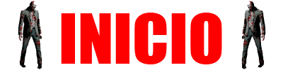

Lançado em 1996, *Resident Evil 1* é um dos jogos pioneiros no gênero survival horror. A história se passa em 1998 e gira em torno de uma série de assassinatos estranhos nas montanhas Arklay, perto da cidade fictícia de Raccoon City. Uma equipe de elite chamada S.T.A.R.S. (Special Tactics and Rescue Service) é enviada para investigar.
A icônica mansão, cenário principal de Resident Evil 1.
O time Bravo da S.T.A.R.S. desaparece durante a investigação, e o time Alpha, que inclui os personagens jogáveis Chris Redfield e Jill Valentine, é enviado para procurá-los. Eles acabam encontrando uma mansão sinistra e se refugiam lá, mas logo descobrem que o lugar está infestado de zumbis e criaturas mutantes, resultado de experimentos com o vírus T, desenvolvido pela corporação Umbrella.
Chris Redfield e Jill Valentine, os protagonistas do jogo.
Dentro da mansão, os protagonistas descobrem laboratórios escondidos e muitos documentos que revelam a verdade por trás dos experimentos. O vírus T é um agente biológico desenvolvido pela Umbrella Corporation, que acidentalmente se espalhou, transformando os funcionários da mansão em monstros.
Tyrant, o chefe final do jogo, criado a partir do vírus T.
No clímax do jogo, Chris e Jill enfrentam o *Tyrant*, uma arma biológica criada pela Umbrella. Após derrotá-lo, os sobreviventes conseguem escapar da mansão momentos antes dela explodir, mas o mistério da Umbrella e do vírus T ainda está longe de ser resolvido.
A mansão Arklay explode no final do jogo, destruindo evidências dos experimentos.
*Resident Evil 1* definiu o padrão para os futuros jogos da série e é considerado um dos títulos mais importantes no desenvolvimento do gênero survival horror. Ele introduziu muitos dos personagens, elementos de jogabilidade e a narrativa envolvente que tornariam a franquia mundialmente famosa.
